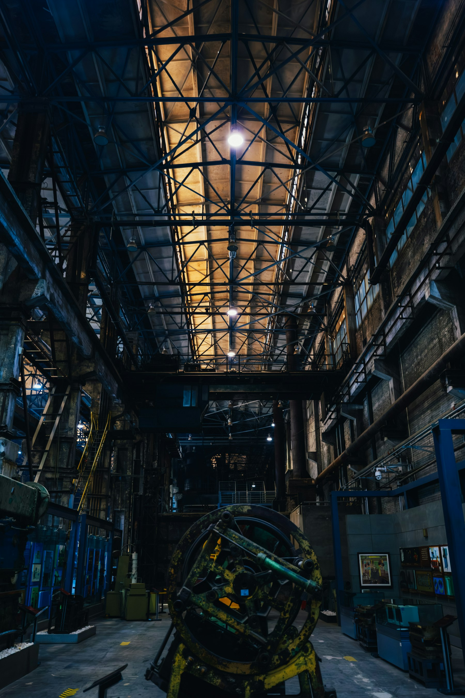
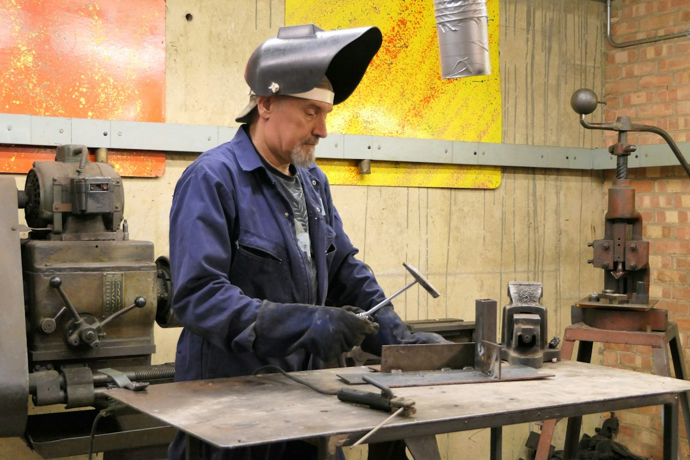

Automation. Integration. Modernization.
Engineering for your next system change.
Start with the system you have. Build a clearer scope for what comes next.
Find the right scope
Begin with the change
you need to make.
You do not need a finished technical brief to choose a starting point.

Make the handover
part of the plan.
Good project preparation makes the scope, test criteria and responsibilities visible from the start.
Understand the system
Document the existing equipment, dependencies and constraints.
Agree the boundaries
Define what is included, who owns each interface and what acceptance means.
Prepare the handover
Plan the documentation and verification needed to support the next team.
Before the first conversation
A clearer brief.
A better starting point.
Use the checklist to gather what you know. Leave the rest open for discussion.
Download the project checklistYour project context
- What needs to change?
- What equipment is already in place?
- What constraints need to be respected?
- What would a successful handover include?